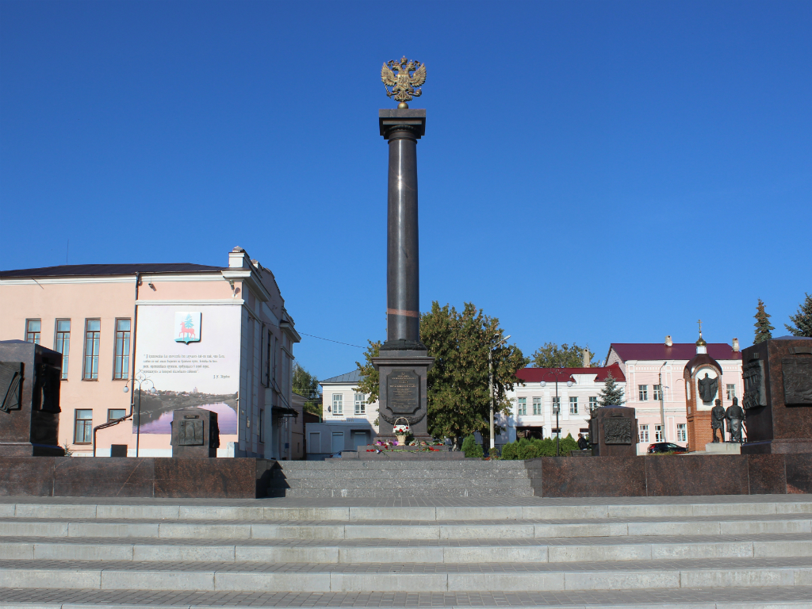

Места нашей области, посвящённые Великой Победе
 Домой
Домой
Знак «Город воинской славы» (Елец)
Место установки: расположен на Красной площади (напротив Вознесенского собора), город Елец.
Памятный знак был открыт 7 мая 2010 года к 65-й годовщине Великой Победы. 9 мая 2010 года в Ельце впервые прошел военный парад от памятного знака «Город воинской славы» до Вечного огня. Автор памятного знака: авторский коллектив во главе с заслуженным архитектором России И. Воскресенским и скульптором С. Щербаковым.
Символ мужества и воинской славы выточен из монолитного гранита. В центре возвышается 11-ти метровая колонна из полированного гранита, выполненная в дорическом ордере и увенчанная гербом Российской Федерации из позолоченной бронзы. На обратной стороне постамента изображен герб города Ельца. Со стороны главного фасада на постаменте изображен Указ Президента России о присвоении городу почетного звания Российской Федерации – «Город воинской славы». По углам площадки размером 17х17 метров установлены гранитные тумбы с шестнадцатью художественными рельефами. Здесь представлены изображения конкретных исторических событий, связанных с историей города и увековечивающих подвиг защитников Отечества и послужившие основанием для присвоения Ельцу этого почетного звания.
Изображения:
